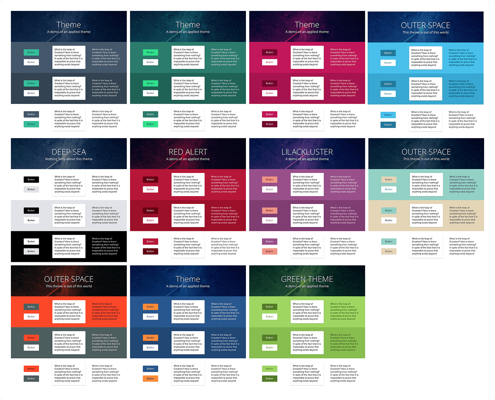
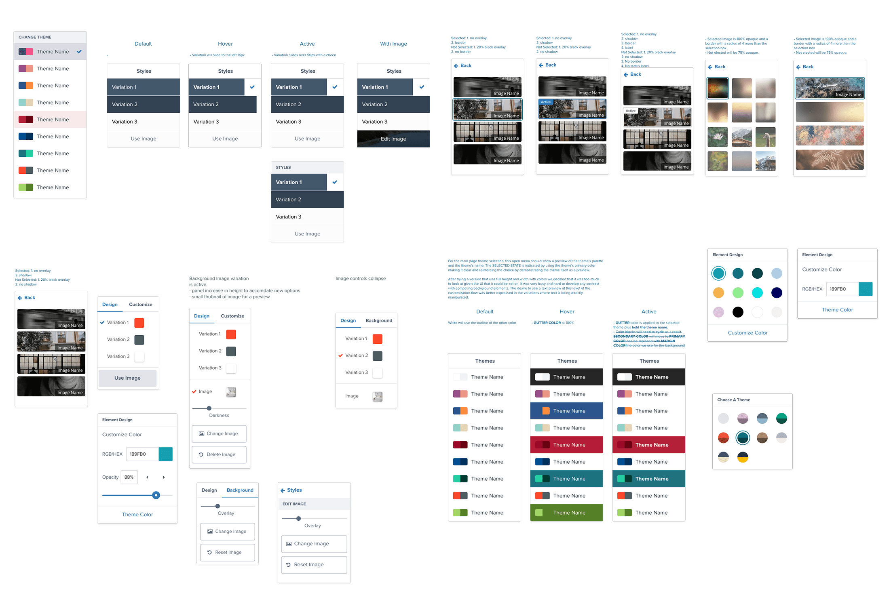

Staying focused on Key features
Accessible themes
Not everyone checks for accessibility when they create things and that's ok. We also understand that color
accessibility is extremely important in classrooms in order to provide equivalent experience and opportunities
to all students. I personally went through and crafts a number of themes that retained accessible text and
offered customizable backgrounds.

Guided customization
Users will almost always say they want more customization options when asked. Why not? Right? With every
added element of customization you also increase the complexity of the system. What we started out with in the
image above was too much for most users.

Tangible Real-Time Collaboration
Not only do we allow users to work together, but you can actually see who is doing what as their cursor
moves on your screen. We wanted to create a living space that users shared and worked on together. It’s one
thing to pass a document back and forth, it’s another to update it live, and it’s even ANOTHER thing when
you can actually see what someone else is doing as if they were in the same physical space.
I used tools like After Effects and principle to design much of the collaborative experience. Due to the
nature of our collaboration being real-time and simultaneous, much of the intent and behavior required
motion and interactions to be created and conducted in order to test, and get a sense of how these advanced
features might feel, prior to investing heavily into any one method.
Optimization and Modern Technology
Leveraging new web technologies, we’re able to provide an extremely optimized and equal experience to each
user. If our products and features fail our low-end device tests, then the whole task fails and we then set
in to optimize and decide. Every student deserves the same opportunity to learn
Tracking and History
Each Studio board has its own history, and everyone in that board has their own participation history.
This
is big for a few reasons. First, it helps teachers track participation and facilitates pro-active
participation. Secondly, having a history allows version control so nothing is lost. In addition, with a
playback feature, we allow the users to see, over time, how the project has evolved and grown. Thirdly,
and
arguably most important, is the fact that since the teachers can see how students build, behave and edit,
we
look forward to being able to identify cognitive issues in new ways.n.